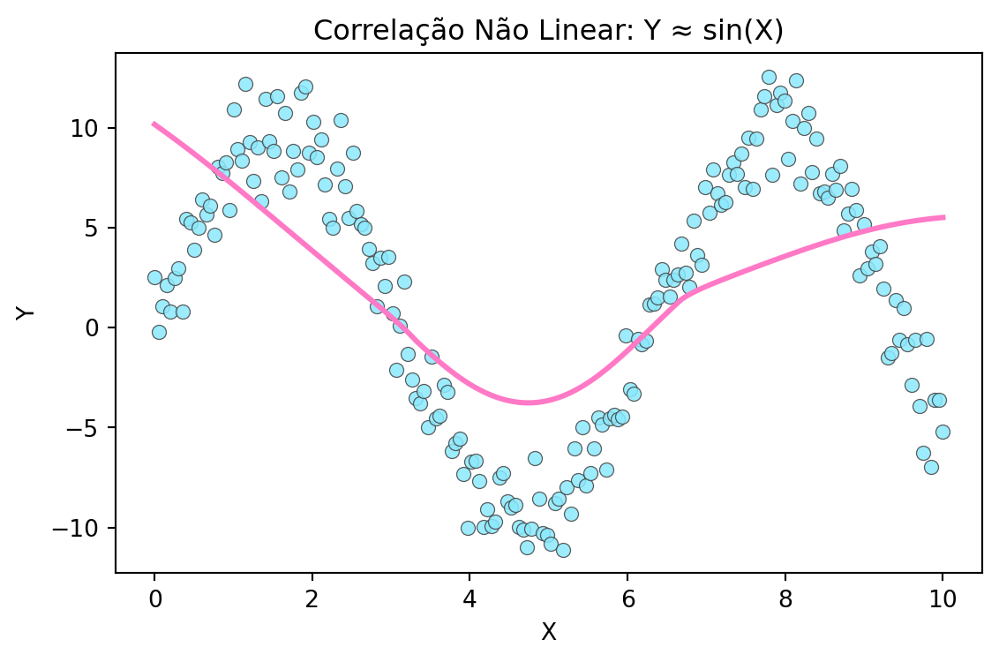
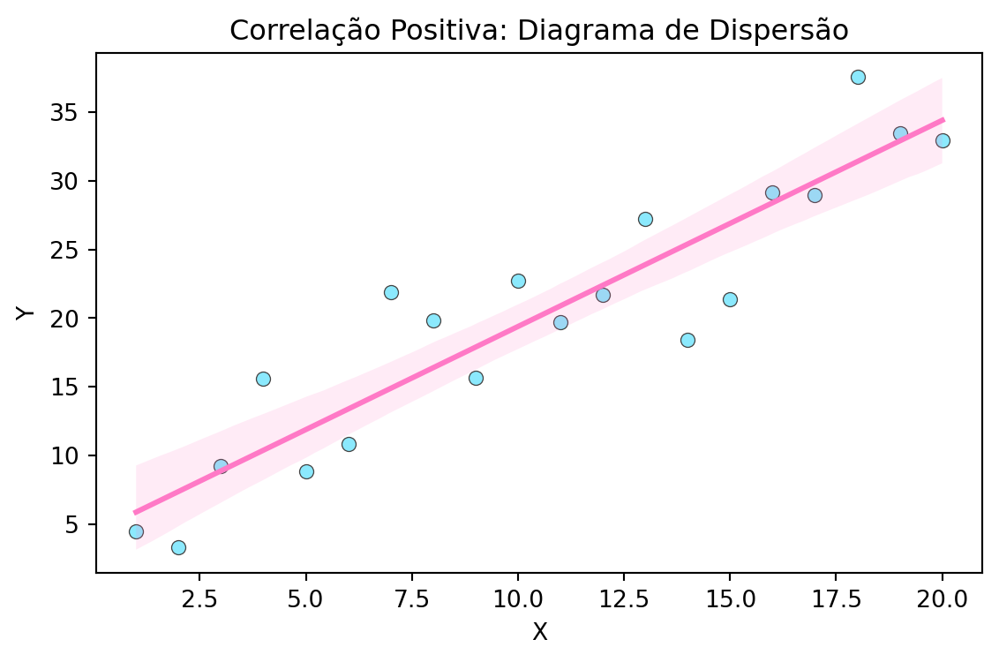

Dia 04 - Regressão e Correlação
Introdução à Estatística com Python
2025-10-19
Análise de correlação
Se duas variáveis têm valores que tendem a variar conjuntamente, dizemos que há correlação entre elas.
Diagrama de dispersão (scatterplot)
Existe correlação quando a nuvem de pontos está disposta na forma de uma elipse.
A correlação é positiva quando X cresce e, em média, Y também cresce;
A correlação é negativa quando X cresce e, em média, Y decresce;
Exemplo: Diagrama de Dispersão
Atenção
No dia a dia, não faz sentido calcular correlação entre X e Y se Y tiver sido criada em função de X.
Os código Python que geram vetores de X e Y são apenas exemplificativos, para visualização e compreensão de conceitos.
Força da correlação e o diagrama de dispersão
Correlação forte forma uma elipse fechada em torno de uma reta
Correlação fraca forma uma elipse arredondada
A correlação nula é indicada por pontos dispersos
Correlação fraca
Correlação linear e não linear
Correlação linear: nuvem de pontos em torno de uma reta
Correlação não linear: nuvem de pontos em torno de uma curva
Correlação não linear
plt.figure(figsize=(6,4))
sns.scatterplot(data=df_nl, x="X", y="Y", color="#8be9fd", edgecolor="#444", alpha=0.85)
# Curva média (suavização local)
sns.regplot(data=df_nl, x="X", y="Y", scatter=False, lowess=True, color="#ff79c6")
plt.title("Correlação Não Linear: Y ≈ sin(X)")
plt.tight_layout()
plt.show()
Pressupostos para o cálculo de coeficiente de correlação
Há unidades da amostra para X e para Y
Unidades foram selecionadas ao acaso e/ou são representativas de uma população
Variáveis X e Y são independentes
Cálculo de coeficiente de correlação
Uma das formas de calcular a correlação linear entre duas variáveis é através do coeficiente de correlação de Pearson (r).
Valor de r pode variar entre -1 e 1
r > 0: correlação positiva
r = 0: correlação é nula
r < 0: correlação é negativa
Calculando coeficiente de correlação Pearson em Python
Calculando coeficiente de correlação Spearman
Dispersão para correlações com diferentes forças
np.random.seed(2025)
def simulate_with_corr(n, rho):
x = np.random.normal(size=n)
e = np.random.normal(size=n)
y = rho * x + np.sqrt(1 - rho**2) * e
return pd.DataFrame({"X": x, "Y": y})
rhos = [0.25, 0.50, 0.75, 0.99]
dfs = {rho: simulate_with_corr(500, rho) for rho in rhos}
corrs = {rho: dfs[rho]["X"].corr(dfs[rho]["Y"]) for rho in rhos}Dispersão para correlações com diferentes forças
fig, axes = plt.subplots(2, 2, figsize=(7, 4))
axes = axes.flatten()
for ax, rho in zip(axes, rhos):
sns.scatterplot(data=dfs[rho], x="X", y="Y", color="#8be9fd", edgecolor="#444", alpha=0.8, ax=ax)
sns.regplot(data=dfs[rho], x="X", y="Y", scatter=False, color="#ff79c6", ax=ax)
ax.set_title(f"Alvo r={rho:.2f} | Pearson≈{corrs[rho]:.2f}")
plt.tight_layout()
plt.show()Análise de regressão
A análise de regressão permite examinar o efeito de uma variável explicativa (ou mais de uma) sobre uma variável resposta.
- Vamos analisar regressão linear entre duas variáveis
Equação da reta
Equação da reta (modelo linear simples):
\[ Y_i = a + b\,X_i \]
- α (alpha) é o intercepto (termo constante)
- β (beta) é o coeficiente angular (inclinação)
Valores de coeficientes
Valores de coeficientes lineares (intercepto)
intercepts = [-3.0, 0.0, 4.5]
slope = 1.2
noise_scale = 1.8
fig, axes = plt.subplots(1, len(intercepts), figsize=(10, 3))
x_line = np.linspace(x.min(), x.max(), 200)
for ax, a in zip(axes, intercepts):
y = a + slope * x + rng.normal(0, noise_scale, size=n)
ax.scatter(x, y, c="#8be9fd", edgecolors="#444", alpha=0.85)
ax.plot(x_line, a + slope * x_line, color="#ff79c6", linewidth=2)
ax.set_title(f"Intercepto a={a:+.1f} | Inclinação b={slope:+.2f}")
ax.set_xlabel("X")
ax.set_ylabel("Y")
ax.grid(alpha=0.25)
plt.tight_layout()
plt.show()
Valores de coeficientes angulares
fig, axes = plt.subplots(1, 3, figsize=(11, 3.5))
x_line = np.linspace(x.min(), x.max(), 200)
for ax, (b, label) in zip(axes, slopes):
y = intercept + b * x + rng.normal(0, noise_scale, size=n)
ax.scatter(x, y, c="#8be9fd", edgecolors="#444", alpha=0.85)
ax.plot(x_line, intercept + b * x_line, color="#ff79c6", linewidth=2)
ax.set_title(f"Inclinação {label}: b={b:+.2f}")
ax.set_xlabel("X")
ax.set_ylabel("Y")
ax.grid(alpha=0.25)
plt.tight_layout()
plt.show()Regressão linear simples
Vamos ajustar uma regressão linear simples a um conjunto de dados.
- Linear: reta
- Simples: apenas uma variável explicativa
Obtenção do coeficiente angular
\[ b = \frac{\sum_{i=1}^n (x_i - \bar{x})(y_i - \bar{y})}{\sum_{i=1}^n (x_i - \bar{x})^2} \]
Obtenção do coeficiente linear (intercepto)
\[ a = \bar{y} - b\,\bar{x} \]
Pontos criados a partir dos coeficientes
Pontos criados a partir dos coeficientes

Condições para ajuste da regressão linear simples
Variáveis devem ser contínuas
Relação entre elas deve ser linear
Observações devem ser independentes
Não trataremos de casos envolvendo variáveis discretas (embora esta análise de regressão seja possível)
Escolha de variáveis explicativas
Exemplos em biologia
Exemplos com o dataset de pinguins
Uso de Inteligência Artificial
Material com exemplos criados com GitHub Copilot usando modelo(s):
GPT 5.0
Referências
- Vieira, S. Introdução à Bioestatística. 2021.